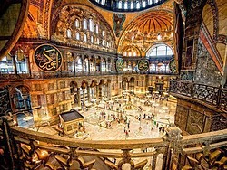
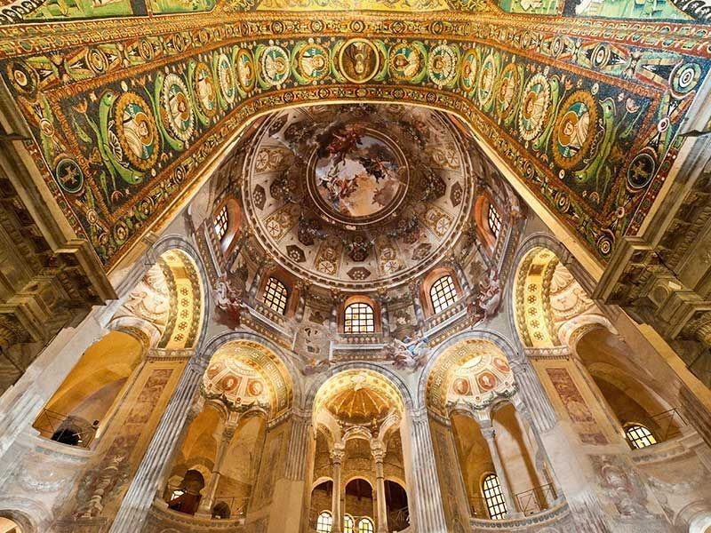

Respuesta de Actividades del Libro de Historia 2BGU
Elija la Unidad:
UNIDAD #0: ¿QUÉ PASÓ EN EL VIEJO MUNDO?
1.En una escala de tiempo, señala cronológicamente los períodos que pertenecen a la
Antigüedad y Edad Media, así como los hechos relevantes de cada etapa. Ordena:
invasiones germanas, caída del Imperio romano de Oriente, Antigüedad, invasiones
árabes, caída del Imperio romano de Occidente, aparición de la escritura, nacimiento
de Jesús, Edad Media.
Antigüedad: 3000 a. C. - 476.
Edad Media: 476 - 1453
Coloca en orden estos hechos:
- Aparición de la escritura (-3000)
- Antigüedad (-3000)
- Nacimiento de Jesús (0)
- Invasiones germanas (476)
- Caída del Imperio romano de Occidente (476)
- Edad Media (476)
- Invasiones árabes (siglo VII)
- Caída del Imperio romano de Oriente (1453)
Observa atentamente estas dos pinturas rupestres. Relaciona las siguientes características con la pintura correspondiente.
Imagen de la izquierda:
a. Solo aparecen animales.
c. Reproduce las formas reales.
e. Utiliza dos colores.
Imagen de la derecha:
b. Aparecen figuras humanas.
d. Es esquemática.
f. Solo utiliza un color.
A continuación, responde a las siguientes preguntas.
• ¿Dónde se pintaban estas escenas?
Estas escenas se pintaban en cuevas y superficies rocosas.
• ¿En qué zona del mundo se encuentran y en qué época se pintaron?
En la península ibérica se encuentran muchas muestras de arte rupestre. Son expresiones pictóricas de la prehistoria.
3.Explica en qué consiste el proceso de hominización. ¿Qué características desarrollaron los homínidos que los diferenciaron de los simios? Clasifica las siguientes características según correspondan al Paleolítico, al Neolítico o a la Edad de los Metales.
Los actuales seres humanos somos el resultado de un largo proceso evolutivo que conocemos como proceso de hominización.
Fue el proceso a lo largo del cual los hominoides adquirieron las características fisiológicas que caracterizan a los humanos en la actualidad.
La hominización consistió en la adquisición de las siguientes características:
• Adopción de una posición bípeda
• Cambio en la disposición de los dedos de las manos que le permitió fabricar útiles
• Cambios en la cadera, las piernas y los pies para poder sostener el peso del cuerpo y mantener el equilibrio
• Aumento de la capacidad craneal y desarrollo del cerebro (mayor inteligencia, capacidad manual y lingüística)
Paleolítico:
• Forma de vida basada en la caza y la re-
colección
• Nomadismo
• Aparición del fuego
• Construcción de megalitos
• Elaboración de pequeñas figuras llamadas
venus
• Talla de microlitos
• Inicio de prácticas rituales y funerarias
• Realización de pinturas rupestres
• Aparición del Homo antecesor
• Aparición del Homo neanderthalensis
• Aparición del Homo sapiens
Neolítico:
• Sedentarismo
• Inicio de la agricultura y la ganadería
• Especialización del trabajo
Edad de los Metales:
• Desigualdad social
• Trabajo de forja
• Útiles de bronce
4.Lee el siguiente texto sobre los griegos y corrige las afirmaciones falsas.
Los griegos crearon una cultura cuya enorme influencia en el mundo occidental se ha prolongado hasta nuestros días.
Esta cultura tomó elementos de otras civilizaciones, como la egipcia y la mesopotámica.
En astronomía descubrieron la esfericidad de la Tierra. Aristarco de Samos llegó a la conclusión de que el centro del universo era el Sol, aunque su teoría fue rechazada y siguió defendiéndose la de Ptolomeo, que afirmaba que la Tierra ocupaba la posición central.
5. La pintura y la escultura egipcias están ligadas a templos y tumbas. Observa la siguiente pintura. Esta escena forma parte del Libro de los Muertos de Hunefer, un escriba de alto rango. Hunefer, que aparece junto a Toth, es llevado por Horus ante Osiris, que está al lado de Isis y Nephtys. También aparecen otras deidades menores. Identifica a todos, justifica tu respuesta.
La pintura y la escultura egipcias usan la perspectiva jerárquica, por tanto, las figuras se ubican según su importancia.
¿Quién es el dios más importante? ¿Y los dioses menores?
Osiris es el dios más importante. Los dioses menores son los de la parte superior. Los reconocemos porque son más pequeños.
¿Qué rango tiene Hunefer?
Hunefer es representado del mismo tamaño de otros dioses, de donde deducimos su importancia.
Las obras de arte egipcias aplican la ley de frontalidad. Observa las figuras humanas y di qué dibujan de frente y qué de perfil. Fíjate en: torso, ojos, cabeza, brazos y pies.
Todas las cabezas se encuentran de perfil, los torsos están de frente y las piernas de perfil.
Las figuras son hieráticas. Busca esta palabra en el diccionario y defínela con tus propias palabras, tomando como ejemplo la imagen que se encuentra la parte superior.
Hierático significa que es inexpresivo, solemne, que no expresa sentimientos. Las figuras egipcias son hieráticas.
6.Lee el siguiente texto y relaciónalo con los hebreos.
Identifica a los personajes y explica su importancia.
• ¿Qué debe construir Salomón?
El texto trata sobre un extracto del relato bíblico de la construcción del templo de
David fue el segundo rey de Israel, que logró dominar a sus enemigos, los filisteos. También fue el padre de Salomón, quien le sucedió en el trono, construyó el templo en Jerusalén y se hizo famoso por su sabiduría.
¿Qué característica diferencia a la religión de este pueblo de la egipcia y la mesopotámica?
El judaísmo fue la primera religión monoteísta (creencia en un solo Dios), a diferencia del resto de religiones antiguas, entre ellas la egipcia y la mesopotámica, que eran politeístas (adoraban a varios dioses).
UNIDAD #1: FIN DEL IMPERIO: DE OCCIDENTE A ORIENTE.
1. Observa el mapa. ¿Qué territorios ocupó el Imperio romano de Oriente? ¿Qué territorios conquistó Justiniano? ¿Qué zona dominaba el Imperio bizantino en el siglo XII?
Inicialmente, el Imperio romano de Oriente ocupó Asia Menor, Grecia y Egipto, pero Justiniano expandió su territorio a Italia, el sur de España y el norte de África. Para el siglo XII la decadencia llevó al Imperio a perder gran parte de su territorio, que se redujo a parte de Asia Menor y Grecia.
2. A partir del eje cronológico, explica la evolución política del Imperio bizantino.
Para el año 330 Bizancio, que solo había sido una importante ciudad griega que formaba parte del Imperio romano, se convirtió en la capital del mismo bajo el nombre de Constantinopla. En el año 395, con la división del Imperio hecha por Teodosio, Constantinopla pasó a ser la capital de la parte oriental del Imperio. Gracias a Justiniano, el Imperio expandió su territorio, y llegó a conquistar Italia y el sur de España. Luego de ver reducido su territorio por la expansión árabe y de otros reinos, no fue hasta 1453 que la ciudad cayó en manos de los turcos, quienes establecieron su Imperio otomano.
3. Averigua en dónde se encontraba el Imperio bizantino ¿Cómo se denomina actualmente Constantinopla? ¿A qué Estado pertenece?
Grecia, Siria, Israel, Egipto, Italia, sur de España, Macedonia, Turquía, norte de Libia, Túnez y norte de Argelia. En la actualidad Constantinopla lleva por nombre Estambul y es una de las capitales de Turquía.
4 ¿Qué significa que el Imperio bizantino fue un Estado teocrático?
El Imperio bizantino fue teocrático porque la religión cristiana impregnó la vida política, social y cultural. El emperador o basileus era considerado el representante de Dios en la tierra y ostentaba el poder político y religioso.
5. Robert Byron, historiador inglés, describió a Bizancio como un «cuerpo romano, con mente griega y alma oriental». ¿A qué se refería?
Se refiere a que heredó la estructura del Imperio romano y parte de su territorio, que era de cultura helenística, pero con una espiritualidad profunda, diferente a la occidental.
6. Si el Imperio bizantino fue heredero del romano, ¿por qué crees que la lengua oficial fue el griego y no el latín?
El arte bizantino fue imperial y religioso, porque reflejaba el poder del emperador y la espiritualidad cristiana.
7. ¿Qué significa que el arte bizantino fue imperial y religioso?
El arte bizantino fue imperial y religioso, porque reflejaba el poder del emperador y la espiritualidad cristiana.
8. Explica qué es una planta de cruz griega. Dibuja un croquis de este tipo de planta.
Es el diseño de planta de las iglesias bizantinas que tenían forma de cruz con los cuatro brazos de igual tamaño. Ver página 25 del libro del estudiante.
9. Observa el dibujo de la basílica y compáralo con la fotografía. Identifica los principales elementos arquitectónicos en la fotografía que muestra la parte exterior del edificio. Señala también los cuatro minaretes que se añadieron posteriormente.
En la foto podemos identificar los minaretes y la cúpula. Los minaretes son las cuatro torres cilíndricas y puntiagudas que rodean la basílica.
10. Explica la diferencia entre mosaico, ícono y pintura mural.
• Describe el ícono y el mosaico de la página 23.
¿Quién está representado?
La pintura mural podía ser más simbólica, mientras el mosaico y el ícono se basaban en figuras religiosas o de la autoridad imperial.
¿Qué significado tiene la escena?
En el mosaico se observa la escena bíblica de la adoración de los reyes magos a Jesús, mientras el ícono es de la Virgen María en un trono. En ambos casos las figuras centrales tienen posiciones de realeza.
11. Busca imágenes del interior de la basílica de Santa Sofía y también de la iglesia de San Vital en Ravena y comenta qué características del arte bizantino has identificado.
La basílica Santa Madre Sofía o Hagia Sophia es un antiguo templo de la iglesia ortodoxa bizantina en Constantinopla, actualmente convertida en museo en la ciudad de Estambul, Turquía. Es considerada la obra arquitectónica cumbre de la arquitectura bizantina. En la primera imagen adjuntada es notable que destacan varias de sus características más particulares: cubierta abovedada, las cúpulas sobre pechinas o triángulos esféricos en los ángulos y capiteles ornamentados.

Por otro lado, está la iglesia San Vital de Rávena declarada como la obra primordial en la arquitectura bizantina italiana. En la segunda imagen adjuntada pueden notarse algunos elementos de dicha arquitectura como su bóveda de arista, bóveda de horno, cúpula central y mosaicos decorativos.

UNIDAD #2: EL CRISTIANISMO.
1. Resume el contexto político en el que vivió Jesús.
Jesús nació en Belén de Judá en un contexto de dominación romana y de espera del mesías. Jesús creció en Galilea, una región en la que los zelotes tenían una fuerte presencia.
Durante la época de Jesús muchos líderes políticos y maestros de la Ley fueron considerados el mesías, pero no fueron oficialmente aceptados por el judaísmo porque no cumplían condiciones como:
2. Responde:
a. ¿Quiénes eran los zelotes?
• Grupos judíos como los zelotes implementaron la lucha violenta y armada contra la dominación romana y ejecutaron frecuentes revueltas que solían ser sofocadas por el ejército romano.
b. ¿En qué se diferenció el mensaje de Jesús de los mensajes de los zelotes?
• Mientras el mensaje de los zelotes era de lucha armada contra el dominio romano, Jesús predicaba la libertad de espíritu, el perdón y el amor al prójimo.
c. ¿Qué son las bienaventuranzas?
• Son un sermón pronunciado por Jesús que establece las condiciones para encontrar la felicidad.
3. Responde
• ¿Cuáles fueron los roles de los apóstoles Pedro y Pablo en la expansión del cristianismo?
El más destacado de los apóstoles fue Simón, un pescador al que Jesús cambió el nombre por el de Pedro, que significa ‘piedra’, sobre la cual se fundaría la cristiandad.
Tras la muerte de Jesús, Pedro tuvo una tarea de magisterio dentro de la cristiandad. Con frecuencia aclaraba dudas y disensiones dentro de las iglesias.
Además de fundar la iglesia de Antioquía, Pedro presidió la comunidad cristiana de Roma hasta que, según la tradición, sufrió el martirio en Roma.
Pablo, un ciudadano romano proveniente de la cultura griega (Tarso), predicó el cristianismo entre los no judíos, los llamados gentiles. En el siglo I difundió el cristianismo por el Mediterráneo oriental.
• ¿Quienes perseguían a los cristianos y por qué?
Los romanos condenaron a los cristianos por algunas de sus ideas que consideraban peligrosas para la estabilidad del Imperio.
• ¿Cómo cesaron las persecuciones contra los cristianos?
Por otra parte, el sanedrín siguió considerando blasfemo el mensaje de Jesús, por lo que empezaron a perseguir y hasta matar a sus seguidores.
4. Investiga: ¿De qué manera el lenguaje oculta la participación de las mujeres a través de la historia del cristianismo?
Son los libros que contienen la historia y enseñanzas de Jesús, escritos por sus discípulos y apóstoles, a partir de sus experiencias personales o testimonios de terceros.
5. ¿Quiénes fueron los francos?
Los francos fueron un pueblo de origen germánico que se estableció en la Galia romana en el siglo V.
¿En qué territorio se establecieron?
Ocuparon el territorio y crearon un reino en el siglo VI.
6. Observa el mapa de la página anterior:
• ¿Qué período de tiempo abarca el mapa histórico?
Abarca desde el Reino franco hasta las conquistas de Carlomagno.
• ¿Qué territorios formaron parte del Imperio carolingio? Con la ayuda de un atlas, escribe el nombre de los Estados actuales.
Norte de España, Francia, Austria, Suiza, Italia, Bélgica, Luxemburgo, Holanda, Alemania, parte de Polonia, parte de Dinamarca, parte de República Checa, Eslovenia y Croacia.
• ¿Por qué se destaca Poitiers?
En Poitiers (732), Carlos Martel frenó el avance del islam en Europa.
• ¿Qué otros pueblos ocuparon Europa en el siglo IX?
En el mapa podemos ver la ubicación del Reino franco y la expansión del Imperio carolingio.
• ¿La batalla de Poitiers ocurrió antes, durante o después del Imperio carolingio?
La batalla de Poitiers ocurrió antes del Imperio carolingio.
• Enumera las marcas. ¿Qué finalidad tenían?
Durante este reinado de Carlomagno, las marcas fueron los territorios fronterizos que habían sido conquistados desde que accedió al trono en el año 771. Estos territorios fronterizos tenían un estatuto diferente del resto de territorios del Imperio Carolingio, los cuales estaban vigilados por los missi dominicos.
Las marcas, en cambio, estaban encomendadas a un marqués o margrave, que era el jefe militar y ejercía las mismas funciones administrativas que cualquier otro conde en su demarcación, es decir, poseía poderes civiles y militares.
Con este sistema de marcas, Carlomagno pretendía crear un colchón territorial entre el Imperio Carolingio y los enemigos de fuera de la frontera. Ello se conseguía ya que las marcas estaban en permanente alerta militar, estando bien dotados militarmente para cualquier enfrentamiento.
• Escribe un breve informe que explique los contenidos representados en el mapa.
En el mapa Carolingio se ven representado exclusivamente los territorio que conquisto el gran Carlos Magno, todos estos territorios formaban un imperio firme y organizado: El imperio Carolingio.
El imperio Carolingio lo formo Carlos Magno VIII pero ya finales del siglo IX con la muerte del emperador Magno, no se pude mantener el imperio ya su hijo, no pudo mantener organizado y estable el imperio.
7. Entra en la web www.biografiasyvidas.com y elabora un resumen esquemático sobre la biografía de Carlomagno.
Ver la web http://goo.gl/qRdesj
8. ¿Cómo gobernó Carlomagno un imperio tan extenso?
Carlomagno creó una eficaz administración y dividió el territorio en condados y marcas, delegando cierto poder en la nobleza.
• Explica la organización político-administrativa del Imperio carolingio.
El condado era un territorio gobernado por un conde en nombre del rey. La marca era un territorio defensivo, localizado en las zonas fronterizas del Imperio. Lo gobernaba un marqués.
• ¿Por qué decimos que el Imperio carolingio supuso el inicio de las relaciones feudales?
Para pagar los servicios de tantos funcionarios, el emperador asignó a dichos nobles numerosas tierras, llamadas feudos. A cambio, los nobles debían jurar fidelidad al rey y ofrecer sus servicios en el ejército cuando este los reclamara.
9. Explica la base económica del Imperio carolingio.
A diferencia del Imperio romano, el Imperio carolingio adquirió un carácter esencialmente rural: la tierra era la principal fuente de riqueza.
10. ¿Cuántos siglos perduró el Imperio carolingio?
• Explica las causas de su decadencia.
El Imperio carolingio sólo perduró durante el reinado de Carlomagno (768 - 814). La nobleza cada vez tenía más poder y era más independiente del dominio imperial, lo que trajo como consecuencia de su decadencia.
11. ¿Qué fue el Tratado de Verdún? ¿Qué representó para el Imperio carolingio?
Mediante el Tratado de Verdún (843), sus hijos acordaron dividir definitivamente el Imperio en tres unidades políticas: el reino de Francia, Lotaringia y Germania.
12. Elabora un eje cronológico del reino franco y del Imperio Carolingio. Ayúdate de la información del apartado y de otras fuentes.
• Debe aparecer la siguiente información: monarcas, años de reinado y principales hechos históricos.
En el siguiente enlace se encuentra un ejemplo:https://goo.gl/RKu9kh.
13. Explica los principales avances culturales de la época de Carlomagno. ¿Perduraron? Utiliza las siguientes palabras.
Carlomagno organizó un nuevo sistema educativo y fomentó la alfabetización en todos sus dominios mediante la creación de escuelas. En los monasterios se copiaban las obras a mano y se difundían manuscritos de todo tipo.
14. ¿Fue positiva la innovación en la escritura? Razona tu respuesta.
Fue positiva porque permitía escribir más rápido y era más fácil de leer.
15. Observa la ilustración del complejo palatino de Aquisgrán y describe sus partes. ¿Qué función tenía cada una?
Aula regia: Sala de audiencias, donde el emperador celebraba reuniones con sus consejeros. Alojamiento real: Estancias privadas del emperador y su familia. Termas: Baños con aguas termales naturales.
Entrada: Entrada monumental al complejo palatino.
Atrio: Patio porticado en la entrada de la capilla.
Capilla palatina: Edificio de planta octogonal y dos pisos, con una rica decoración interior.
16. ¿Qué significa que la planta de la capilla es octogonal? Dibuja una planta octogonal.
• Señala los arcos de medio punto (en forma de semicírculo). ¿Cómo están decorados?
Significa que tienen ocho lados. Ver un dibujo en este enlace:https://goo.gl/gqjjk7.
17. Consulta la página web http://goo.gl/ZiFPyy y explica por qué Carlomagno construyó el palacio de Aquisgrán.
Carlomagno construyó su palacio en Aquisgrán por la limpieza de sus aguas, llevadas a la ciudad por acueductos romanos.
18. Contesta las siguientes preguntas. Justifica tus respuestas.
a. ¿Por qué se crearon los tribunales de la inquisición?
Para erradicar las herejías
b. ¿Cuáles fueron los objetivos de las cruzadas ?
Detener el avance islámico, controlar las rutas comerciales y recuperar los lugares santos.
c. Señala ¿Cuál fue el emperador que inició la sexta cruzada en 1228?
Federico II.
d. Indica dos causas que originaron las Cruzadas
La hegemonía católica en Europa estaba en peligro y los musulmanes amenazaban con tomar Bizancio.
19. Investiga hasta que año estuvo en vigencia la Inquisición.
Hasta 1965.
20. Realiza un ensayo comparativo con tus compañeros y compañeras sobre los cambios que ha tenido la iglesia, desde sus inicios hasta la actualidad.
La iglesia tuvo sus inicios durante en imperio romano y se dio a conocer las enseñanzas de Jesuscristo. Pedro fue parte clave en el cristianismo y el Papa, persona que es el segundo sucesor de Jesús.
Una de las cosas que se ha mantenido son las doctrinas, que ha perdurado en el tiempo, sin embargo cosas como los versículos, la palabra de Dios se ha perdido frente a la sociedad, ya existen personas que no tienen temor de Dios y se han descarrilado por un mundo sin base ni sentido.
Hablando sobre la Biblia, hemos visto cómo se ha podido traducir en muchos idiomas, ayudando que la palabra de Dios se divulgue por el mundo.
21. Desarrolla un coloquio sobre la Edad Media y el Tribunal de la Inquisición.
Los tribunales de la inquisición, empezaron a fundarse a partir del año 1220, por el Papa Honorio III, con el fin de juzgar y castigar los delitos de herejía.
En la Edad Media la Iglesia y el estado estaban amalgamados en una sola entidad, y se consideraba que quien atacaba la fe, en realidad estaba atentando en contra del estado.
El nombre Inquisición se deriva del verbo latino inquiro (consultar). Los inquisidores no esperaron las denuncias, sino que buscaron personas acusadas de herejía. La Inquisición fue creada para combatir a brujas, adivinos, blasfemos y otras personas sacrílegas.
22. ¿Con qué objetivo nacieron las universidades? Explica quiénes estudiaban en ellas y qué estudios se cursaban.
Las universidades nacieron con la finalidad de generar y enseñar nuevos conocimien-
tos que aportaran a la vida práctica. Esta idea surge de la necesidad que tienen los
reyes, nobles y la clase social aristocrática, así como el clero, para que sus hijos y sus
candidatos a ser sacerdotes desarrollen nuevas destrezas a partir del aprendizaje.
La universidad medieval, al convertirse en el centro de los saberes, se especializó en
cuatro facultades: Arte, Derecho, Medicina y Teología. La facultad de Arte fue a la
que mayor cantidad de estudiantes acudían para educarse.
23. ¿Cuál fue el papel de la iglesia en la cultura medieval?
La cultura de la Europa medieval era eminentemente cristiana. La tradición cultural europea perduró gracias al esfuerzo de la Iglesia y, en especial, al de los monasterios.
24. ¿Cuál era la principal finalidad del arte románico? ¿Qué favoreció su expansión?
Se trataba de un arte fundamentalmente religioso y didáctico, al servicio de la Iglesia católica, pues su principal finalidad consistía en difundir las enseñanzas de la Biblia entre una población que mayoritariamente no sabía leer ni escribir. La estabilidad política y el desarrollo económico del siglo XI favorecieron la expansión del románico.
25. Completa el texto con los términos correctos:
• Las principales construcciones fueron las (iglesias/catedrales) y los (castillos/palacios).
R//:Las principales construcciones fueron las iglesias y los castillos.
• Las construcciones eran muy esbeltas/sólidas; se utilizaban el arco (de medio punto/ apuntado) y las bóvedas (de crucería/de cañón).
R//:Las construcciones eran muy sólidas; se utilizaban el arco de medio punto y las bóvedas de cañón.
26. Describe la principal función y las características de la escultura románica.
—¿Dónde se situaban principalmente los relieves románicos?
La escultura románica, como la pintura estaba supeditada a la arquitectura. Su principal función era instruir a los feligreses. Los relieves se situaban principalmente en las portaladas.
27. Observa la imagen de la portalada y descríbela.
a. ¿Qué personaje preside el tímpano?
El tímpano es presidido por Cristo
b. El personaje central está rodeado por un ángel, un león, un águila y un buey. Averigua qué simbolizan estas figuras en el cristianismo.
Rodeados de cuatro imágenes que simbolizan a los cuatro evangelistas.
28. Elabora un esquema de la pintura románica
en el que figuren: función, localización en el templo, principales características y temas más representados.
| Función |
Localización |
Característica |
Temas |
Instruir religiosamente y fomentar la espiritualidad. |
Ocupaba todas las superficies interiores de piedra: muros, bóvedas y ábsides. |
Expresividad y simbolismo, frontalidad, colores muy intensos. |
La Virgen María y el pantocrátor |
29. Observa la imagen superior.
a. ¿Qué tema refleja?
La imagen refleja el Juicio Final.
b. ¿Cuál es el personaje principal? ¿Qué actitud muestra?
El personaje principal es Cristo en actitud de adoctrinamiento y juicio.
c. ¿Qué otros personajes aparecen?
También aparecen los cuatro evangelistas y ángeles.
d. ¿Qué colores predominan?
Predominan los colores azul y púrpura.
e. ¿Qué rasgos del románico se aprecian en esta obra?
Podemos apreciar los siguientes rasgos románicos: expresividad y simbolismo, frontalidad y colores intensos.
UNIDAD #3: EL ISLAM.
¿Qué es el islam?
La palabra islam, en árabe, significa ‘sumisión a la voluntad de Dios’.
¿Qué nombre reciben los creyentes de la religión islámica?
Pero esta sumisión no debe ser pasiva, sino que el creyente en Alá acepta, en cuerpo y alma, los designios preestablecidos en los cinco pilares definidos por el profeta Mahoma y comprende que en ellos se encuentra la verdadera libertad. A los seguidores de Mahoma los llamamos musulmanes.
2. Corrige las frases falsas sobre el islam:
a. Las causas de la rápida expansión fueron el uso de la fuerza y la imposición de la religión.
Las causas de la rápida expansión fueron la debilidad de los imperios romano y persa, el respeto de los musulmanes por las religiones de los pueblos conquistados y la obligación de defender la religión islámica por medio de la Yihad.
b. El califa era el sumo sacerdote.
El califa era un jefe político y religioso.
c. El Estado era teocrático, es decir, se podía escoger a los representantes.
El Estado era teocrático, es decir, se basaba en la religión.
d. La hégira es el principal santuario islámico.
La hégira es la huida de Mahoma a La Meca en el año 622.
e. Los emiratos eran Estados autónomos.
Los emiratos eran provincias del Imperio.
3. Resume en un esquema las características económicas y sociales del Imperio islámico.
| Características económicas |
Los árabes tuvieron control en la economía y la sociedad hasta el siglo XIII. Control de las rutas comerciales más importantes. Economía basada en la agricultura y en las manufacturas. |
Características sociales
|
Era una sociedad urbana. La ciudad era el centro económico, religioso y de poder.
La sociedad era jerárquica. Los árabes ocuparon los puestos más relevantes de la administración y el ejército, mientras que la población no árabe quedó excluida de las esferas de poder.
|
4. La Hispania visigoda fue conquistada rápidamente y sin dificultad por los árabes. Explica las causas.
• La falta de cohesión interna del reino visigodo, cuyos monarcas eran cuestionados por los nobles.
• La ferocidad de las tropas musulmanas, formadas por guerreros bereberes convertidos al islam.
• El recurso a capitulaciones o pactos con la población local.
5. En sus inicios, al-Ándalus era un emirato dependiente, ¿De quién? ¿Cuál fue la capital del emirato dependiente?
Desde el momento de su conquista, al-Ándalus, con su capital Córdoba, se convirtió en un emirato dependiente del califa de Damasco.
6. Dibuja un eje cronológico con los períodos de al-Ándalus: reinos de taifas - emirato independiente - reino nazarí-emirato dependiente - califato de Córdoba.
Ver cronología de la página anterior de esta guía.
7. Tras la caída del último califa, el califato de Córdoba quedó dividido en los reinos de taifas. Explica qué caracterizó este período.
Como política y militarmente eran débiles, los reyes de las taifas pagaban parias (tributos) a los monarcas cristianos. Para sufragarlas, tuvieron que aumentar los impuestos, lo que provocó el descontento de la población andalusí.
8. ¿Cómo denominaron los musulmanes a los territorios conquistados en la Península Ibérica?
Los denominaron al-Ándalus.
¿Qué zonas de la Península fueron conquistadas y cuáles no?
Los musulmanes conquistaron toda la península, excepto el reino del norte: León, Navarra, Aragón, y otros pequeños reinos de la frontera con el reino de los francos.
a. ¿Cuándo y dónde se frenó el avance musulmán hacia el norte de Europa?
En el año 756 la dinastía abasí tomó control del califato, trasladando su capital a Bagdad. El omeya Abd al Rahman I se escapó a al-Ándalus y estableció el emirato independiente de Córdoba. En el año 929 se estableció el califato independiente con sede en Córdoba. Fue a partir de entonces que al-Ándalus alcanzó mayor autonomía y estabilidad.
En el año 1000 empezó la crisis en el califato, motivada, sobre todo, por la dificultad de sostener al ejército. Esta crisis llevó al califato a fragmentarse en varios reinos (taifas), muy débiles, algunos de los cuales llegaron a ser conquistados por Castilla y León. Los almorávides llegaron a la península a reconquistar los reinos taifas y establecieron el Imperio almohade que sucumbió ante los cristianos en 1212. A partir de entonces empezó el declive de la dominación musulmana en la península ibérica. En los pocos territorios que aún dominaban, los musulmanes crearon el reino nazarí, vasallo de Castilla, que finalmente fue reconquistado por la Corona en 1492.
9. Enuncia los principales aportes culturales del arte islámico.
Arte, arquitectura, artes menores, matemáticas, física, geografía, industria comercio.
10. Realiza un mapa mental de las principales ciencias y descubrimientos en los que los árabes tuvieron influencia.
Ver el enlace: http://goo.gl/FH7Nyi.
11. ¿Qué descubrimientos llamaron tu atención y por qué?
Respuesta Abierta
12. Enuncia las características de las artes de la cultura islámica.
El arte musulmán tuvo un carácter sincrético, es decir, adoptó elementos artísticos de otras culturas. La pintura y la escultura se desarrollaron poco, en parte porque el Corán prohíbe utilizar la representación de la figura humana como objeto de culto. Se desarrollaron especialmente la arquitectura y las artes menores.
UNIDAD #4: EL SURGIMIENTO DE LA MODERNIDAD.
1. Explica cuáles fueron las principales ideas del pensamiento humanista.
Revalorización del ser humano. El individuo era considerado el centro del universo y la máxima expresión de la naturaleza. Esta concepción (antropocentrismo) superaba el teocentrismo medieval en el que Dios era el eje en torno al que giraban el mundo y la vida de hombres y mujeres. Al situar al ser humano en el centro del mundo, la voluntad humana recuperaba capacidad para actuar y crear.
Recuperación de la Antigüedad clásica. Proliferaron tanto los estudios sobre los autores grecolatinos como las excavaciones y el coleccionismo de obras clásicas.
Diferenciación de la fe religiosa y el saber. A partir del Humanismo, el conocimiento se basó en un método científico (estudio, investigación, análisis crítico) y no en creencias dogmáticas.
2. Busca información sobre el desarrollo científico y técnico de los siglos XV y XVI, y redacta un breve informe. http://bit.ly/1oPDKZM
Abrir los siguientes enlaces: http://goo.gl/1bsAZg https://goo.gl/QFgUHb
3. Explica por qué razón se llamó Renacimiento al nuevo estilo artístico surgido en el siglo XV. Justifica tu respuesta.
Se llamó Renacimiento porque fue una corriente artística que rescataba los temas y las formas del arte clásico grecorromano.
4. Explica por qué surgieron las iglesias protestantes en el siglo XVI.
• ¿Qué aspectos de la Iglesia católica fueron criticados a principios del siglo XVI? explica sus características.
La iglesia católica desde su fundación ha como institución ha estado plagada de intrigas y corrupciones. Durante el siglo XVI Europa se encontraba en pleno renacimiento y las condenas a la Iglesia se hicieron cada vez más públicas y recriminadoras.
Aspectos como la reproducción y la sexualidad, el celibato, la adoración de imágenes, pero sobretodo los indultos a cambio de altas sumas de dinero, el abuso y tráfico de influencias y riquezas detonaron en pleno siglo XVI. Así fue como un movimiento llamado Luteranismo surgió enfrentándose al Papa, adhiriendo a todas las personas inconformes con la Iglesia Católica.
• ¿Quién fue Martín Lutero?
Martín Lutero fué un teólogo alemán y fraile católico agustino que comenzó e impulsó la reforma religiosa de Alemania y se inspiró a la Reforma Protestante y la doctrina teológica y cultural conocida como luteranismo.
• Explica los principales rasgos del luteranismo.
1. Creen que la relación con Dios es directa y personal, por lo que no siguen las estructuras de la iglesia Católica. No existe un Papa, como persona más cercana a Dios sino que todos los fieles lo están por igual.
2.Solo tienen dos sacramentos: bautizo y eucaristía.
3. No se rinde culto ni a los santos ni a la virgen María. Son considerados modelos de fe cristiana más no dignos de adoración
5. Explica las principales diferencias entre catolicismo y protestantismo.
• ¿Qué fue la Contrarreforma?
Fue un concilio de la iglesia, reunido de 1545 a 1563 en Trento, cerca de los Alpes
• ¿Qué se determinó en el Concilio de Trento?
Fueron varios los acuerdos a los que se llegó luego de finalizado el Concilio de Trento, incluso después de las interrupciones de 1547 y de 1552.
Lo más importante decidido por los obispos sinodales fue:
1. La aceptación del canon bíblico que hoy emplea la iglesia católica, representado por los libros de la Vulgata Latina y la Septuaginta Griega.
2. La ratificación del Credo Niceno-Constantinopolitano como doctrina de fe.
3. El decreto que afirma la existencia de una humanidad caída, producto del pecado original.
4. Las leyes que permiten la justificación del pecado por la fe y las buenas obras (posibilidad de redimirse por acciones indulgentes)
5. Institución de los sacramentos, fundamentalmente el bautismo y la confirmación, pero en líneas generales, se establecen todos los existentes hasta hoy.
6. Decreto en el que se admite como doctrina de la iglesia la existencia del purgatorio como espacio atemporal al que van las almas extraviadas.
7. Afirmación de la doctrina trinitaria como dogma de fe.
6. Elabora un esquema con las principales ideas de los pensadores ilustrados.
La ilustración fue un movimiento científico e intelectual que tomó auge en el siglo XVIII en Europa, que pretendió promover la ilustración, la educación, la ciencia y el saber a través del pensamiento.
Sus precursores de mayor impacto fueron: Montesquieu, Voltaire, Rousseau, Smith, Hobbes, Kant y Locke.
Estaba basado en el racionalismo y humanismo, el primero consistía en investigar el por qué de las cosas de una manera científica , a través de indagaciones y conjeturas profundas, y el segundo consistía en re valorar la dignidad del hombre en el mundo.
El esquema, así como las principales ideas se agregan en el archivo adjunto elaborado exclusivamente para esta pregunta.
7. Responde: ¿por qué crees que el siglo XVIII se denomina el Siglo de las Luces?
El siglo XVIII se denomina "de las luces", en contraposición al supuesto oscurantismo de la Edad Media y a la analogía entre la razón y la luz.
8. Investiga los términos teocentrismo y antropocentrismo.
Teocentrismo: Cosmovisión centrada en el concepto de Dios y la religión.
Antropocentrismo: Cosmovisión centrada en el ser humano y la razón.
9. Responde: ¿Cuál es el principal legado de la Ilustración a la cultura occidental?
La teoría sobre la división de poderes y el concepto de contrato social. A partir de estos conceptos se gestaron las independencias de América.
El enciclopedismo y la nueva pedagogía basada en la racionalidad.
10. Prepara un resumen sobre las fases de la Revolución entre 1789 y 1794.
1789: Estados generales. En la reunión de los representantes el tercer estamento pidió el voto personal. Ante la negativa de los otros dos estamentos, la burguesía y las clases populares se declararon en rebeldía e instauraron la Asamblea Constituyente. Empezaron las revueltas populares. Asaltaron la Bastilla.
1791-1792: Monarquía constitucional. Desde la Asamblea Constituyente hasta 1792, los revolucionarios moderados (los girondinos), gobernaron Francia. Crearon una nueva constitución con ideales ilustrados y proclamaron los Derechos del Hombre. Enfrentaron la oposición de los demás estamentos y de Prusia y Austria.
Primera República. Ante la concesión de privilegios a la burguesía, las clases populares tomaron las calles de París en agosto de 1792. Los jacobinos, el grupo más radical de la Revolución, con Maximilien Robespierre a la cabeza, abolieron la monarquía constitucional y establecieron la Primera República.
1792-1795: La Convención Nacional. La nueva asamblea redactó una nueva constitución que introdujo el sufragio universal masculino y medidas sociales. Época del Terror. Persecución a los contrarrevolucionarios.
1795-1799: El Directorio. Ante los excesos de los jacobinos, los girondinos retomaron el poder y redactaron una nueva Constitución que volvía al sufragio censitario.
11. Lee el texto de los Derechos del Hombre. ¿Qué diferencias se plantean respecto a la sociedad estamental?
Se diferencia en que reconoce los derechos a todos por igual, mientras que en la sociedad estamental estos dependen del grupo social en el que haya nacido la persona.
• ¿Quedan reflejadas ideas de la Ilustración, como la soberanía nacional, la libertad individual o la separación de poderes?
Sí quedan reflejadas.
• ¿Crees que las ideas que se transmiten están vigentes hoy en día? Justifica tu respuesta.
Sí, porque muchas veces nos damos cuenta que seguimos con la concepción de nuestros padres, con los acuerdos tácitos de la sociedad, como el vestirse de negro en un velorio, a veces también seguimos con los prejuicios de nuestros padres, es difícil ir en contra de lo que nos inculcaron desde niños, así que pienso que sí, que algunas ideas siguen vigentes hasta ahora
12. ¿Por qué Napoleón Bonaparte consiguió coronarse como emperador?
Napoleón consiguió coronarse emperador en 1804 debido a sus éxitos militares en Europa.
13. El imperio difundió por Europa las ideas de libertad e igualdad.
• ¿Por qué entonces se produjeron levantamientos populares en contra en muchos países?
Porque no estaban de acuerdo con la ocupación militar.
• ¿Qué ideales defendían los que se rebelaron contra el dominio francés?
Defendía las mismas ideas de la Ilustración: libertad, soberanía e igualdad.
UNIDAD #5: TEORIAS Y SISTEMAS ECONÓMICOS.
1. Analiza y reflexiona.
a. ¿Cuál es tu apreciación respecto al sistema económico de la Época Paleolítica, en relación a la Época Neolítica? http://goo.gl/fzjV3n
Son economías muy distintas por la forma en que se obtenía el sustento. En el Paleolítico los humanos se alimentaban de lo que pescaban y recolectaban, por eso se le llama economía de subsistencia.
Paleolítico: Los homínidos solían vivir bien sea en cuevas o en cabañas primitivas; su principal herramienta era la piedra, la cual era tallada de forma rudimentaria para sus tareas cotidianas; sus principales actividades eran la caza y recolección de frutos silvestres; no solían vivir en el mismo territorio y seguían un estilo de vida nómada.
Al llegar el Neolítico, cambió la forma de obtener los recursos. Surgió la agricultura y con ello cesó progresivamente la economía de subsistencia. Se empezó a planificar la forma de obtener los recursos y surgieron el comercio y las distintas ocupaciones. Ya no era necesario que todos se dedicaran al cultivo de la tierra para poder alimentarse.
Nota: debes construir el diagrama con la información de la parte superior.
Analiza y reflexiona.
a. ¿Cuál es tu apreciación sobre la agricultura, minería y manufactura en la América precolombina en el aspecto económico?
Eran actividades que no estaban dirigidas a la satisfacción del mercado, sino a cubrir las necesidades comunes.
b. Realicen una comparación sobre la economía precolombina y la economía actual.
Mientras la economía precolombina se basaba en el intercambio de fuerza laboral y en la relación de parentesco, la economía actual se basa en la remuneración por el trabajo individual, la producción masiva y el mercado.
3. ¿Qué era el mercantilismo? ¿En qué se basaba?
El mercantilismo es una doctrina económica.
El mercantilismo se basa en argumentar que un país será más rico, cuánto mayor cantidad de metales preciosos posea, la riqueza proviene de metales como el oro y la plata.
El mercantilismo provee la intervención del estado.
Tuvo lugar entre los siglos XVI y XVII.
El mercantilismo seguía una política proteccionista.
Como representantes notables tenemos a William Petty, y Thomas Gresha
4. Explica las razones para su expansión.
Las principales razones de la expansión del mercantilismo se debe a la expansión territorial europea en los siglos XVI y XVII, el cual transformó la economía y consolidó esta tendencia económica. El descubrimiento de nuevos territorios causó una serie de cambios que implican un control más exhaustivo de las nuevas riquezas encontradas, la aparición de rutas comerciales, el desarrollo de los puertos atlánticos, entre otras.
5. Realiza un ensayo sobre la expansión colonial en los pueblos americanos.
La colonización de América es el proceso comprendido desde el 12 de octubre de 1592 hasta el 13 de agosto de 1898 en donde se implantó una administración similar a la administración peninsular contemporánea. La colonización fue realizada por la Corona Real de Castilla, es decir, la Corona Española.
En el siglo XV los territorios indígenas fueron incorporados paulatinamente a la Corona mediante el proceso de conquista, iniciando el proceso de mercantilismo y consolidando el Imperio Español. Durante el siglo XIX con la transformación del Estado Liberal, inicia la independencia hispanoamericana de la mano de figuras como Simón Bolívar o Francisco de Miranda.
La consecuencia mas notable de la colonización fue el mestizaje, producto de factores como la aceptación de los indígenas por la iglesia y de los distintos cruces de razas, donde también participaron negros esclavos, y derivando en las razas mestizo, mulato y zambo.
6. Busquen información sobre la esclavitud en la actualidad
¿Crees que persiste el fenómeno de la esclavitud en otras formas? ¿Cuáles? ¿Dónde?
• En países como China, existen fábricas en las que los obreros trabajan más de
ocho horas diarias por salarios ínfimos respecto a la ganancia que obtienen las empresas por los productos. Además, muchas mujeres y niños trabajan en condiciones precarias.
• También en países como la India existe esclavitud sexual femenina.
7.Explica las principales características del capitalismo industrial.
a.Realicen un debate sobre la división del trabajo en un sistema industrial. ¿Actualmente, cada trabajador realiza una tarea específica dentro del proceso productivo, o desempeña diversas tareas diferentes?
En grandes industrias el obrero suele estar limitado a una labor muy específica, generalmente la operación de algunas máquinas. En las pequeñas generalmente el obrero tiene más funciones y desempeña más actividades manuales o menos mecanizadas que en la gran industria.
8. Responde: ¿Cuál fue la causa económica de la Revolución francesa?
Uno de los detonantes de la Revolución francesa fue el déficit fiscal producto de que el Estado, gobernado por los nobles y el clero, gastaba más de lo que recaudaba en impuestos al Estado llano.
a. Responde: ¿Cuál fue la causa económica de las independencias hispanoamericanas?
En el aspecto económico se suma la desazón de la acaudalada oligarquía criolla por su exclusión de los cargos más influyentes y sus deseos de gestionar los asuntos económicos de forma autónoma.
b. Investiga a qué clases sociales pertenecían Simón Bolívar y José de San Martín.
Tanto Bolívar como San Martín eran blancos criollos, pertenecientes a la clase gobernante que tenía intereses económicos contrarios a la Corona. Por ejemplo, la familia Bolívar era hacendada, productora de cacao, el cual solo podían comerciar con España por disposición de la Corona, mientras había en auge un mercado internacional con las colonias del Caribe y el norte de América.
9. Averigua que ruta se describe en La vuelta al mundo en ochenta días de Julio Verne y el medio de transporte empleado en cada fase del viaje.
Ver el siguiente mapa: https://goo.gl/DQDwvq
a. Enumera los principales cambios en los sistemas de producción de la segunda revolución industrial y explícalos brevemente.
• Nuevas fuentes de energía: gas, petróleo y electricidad.
• Nuevos materiales y nuevos sistemas de transporte (avión y automóvil).
• Nuevos medios de comunicación (teléfono y radio).
10. Analiza y reflexiona.
a. ¿Qué aspectos han influido en el desarrollo de las TIC?
Surgen gracias a los nuevos medios de transmisión (satélites, láser y fibra óptica) y, especialmente, de la vinculación entre las telecomunicaciones y la informática.
b. ¿A través de qué soportes se transmite la información?
• Sistemas inalámbricos. La información se transmite a través de ondas por el aire. Requiere antenas (emisoras, receptoras y repetidoras) y, en ocasiones, satélites de comunicaciones.
• Sistemas por cable. La información discurre a través de un cable, con impulsos eléctricos (cable telefónico, red eléctrica...) o haz de luz (cable de fibra óptica).
c. ¿En qué aspectos se aprecia la expansión de las actividades económicas relacionadas con la comunicación?
• Las empresas especializadas en comunicaciones.
• La integración de las comunicaciones a la casi totalidad de las empresas.
• Las TIC condicionan la vida cotidiana.
11. Explica el proceso de formación de los dos bloques después de la Segunda Guerra Mundial.
—¿En qué consistió la Guerra Fría?
Acabada la Segunda Guerra Mundial, se produjo una escalada en la tensión entre las dos superpotencias que habían estado anteriormente aliadas contra el nazismo. El 1948, tuvo lugar el primer conflicto de la Guerra Fría en Alemania: tres de las cuatro potencias ocupantes (Estados Unidos, el Reino Unido y Francia) unificaron administrativamente sus zonas ocupadas, a lo que la URSS reaccionó con el bloqueo de Berlín.
• Entre 1947 y 1991, el mundo estuvo dividido en dos bloques enfrentados: el capitalista, liderado por Estados Unidos, y el comunista, liderado por la Unión Soviética. Este período de división mundial bipolar se conoce como Guerra Fría, expresión que alude al sistema de relaciones internacionales basado en un estado de tensión permanente y de desconfianza recíproca entre los dos bloques.
12. Busca información sobre el bloqueo de Berlín y redacta un breve informe. Haz un esquema sobre las etapas de la Guerra Fría, con cronología, características y acontecimientos.
• https://goo.gl/cgUPLX
• http://goo.gl/BrP8ds
• Cronología de la Guerra Fría: http://goo.gl/vzLZB9
UNIDAD #6: SOCIEDAD Y PODER EN EL SIGLO XX.
1. Responde: ¿Por qué el capitalismo generó condiciones desfavorables para los trabajadores?
Porque buscaba incrementar la producción y disminuir los costos. Para ello los obreros debían trabajar largas jornadas por salarios muy bajos. Los niños y las mujeres desempeñaban trabajos forzosos.
2. Responde: ¿Cuáles son los objetivos del movimiento obrero?
• Lograr mejoras en las condiciones laborales (salarios, horarios, etc.).
• Influir en el Gobierno para que establezca una ley laboral que garantice los derechos de asociación y de huelga.
3. Elabora una definición de la Internacional Socialista.
Es la organización internacional de los movimientos obreros de todo el mundo.
4. ¿Cuáles han sido las reivindicaciones de las mujeres a lo largo de la historia?
El feminismo lucha contra el sexismo, esto es la subordinación de la mujer al hombre, y contra cualquier forma de discriminación social por el sexo.
5. ¿Por qué los proyectos políticos ilustrados no cumplieron las perspectivas sufragistas?
Porque no hizo extensiva la igualdad de derechos políticos para ellas.
6. Define indigenismo.
El indigenismo es un movimiento político, social y cultural que busca reivindicar el valor de los pueblos y nacionalidades indígenas en el contexto de la discriminación y etnocentrismo sufridos desde la época de la Colonia hasta su exclusión del desarrollo de los Estados modernos latinoamericanos.
7. Responde: ¿Cuál es la principal característica del indigenismo en el siglo XXI?
El indigenismo ha sido influenciado por las ideas socialistas difundidas en América hacia finales del siglo XX y principios del XXI.
8. Identifica los elementos comunes entre Dolores Cacuango y Tránsito Amaguaña.
Ambas participaron en la Federación Ecuatoriana de Indios, en 1944.
9. Responde: ¿Por qué el capitalismo atenta contra el medio ambiente?
Porque la industrialización ha privilegiado la sobreproducción para inundar el mercado de productos, para lo cual ha requerido la extracción indiscriminada de materias primas, sin medir la huella que esta actividad deja sobre el medio ambiente y la salud de las personas.
10. ¿Cuándo se hicieron más palpables los efectos de la explotación de la naturaleza? ¿Crees que en la actualidad la industria ha disminuido sus efectos negativos sobre la naturaleza?
Al final de los años 40, se hicieron más palpables los efectos negativos de la explotación de la naturaleza por parte del hombre. Aún cuando las tecnologías tienen a optimizar el consumo de energía, las fuentes fósiles (petróleo, gas, gasolina) sigue siendo la propulsora de la industria. El impacto negativo no ha disminuido.
11. ¿Qué analogía establecen los movimientos ecofeministas entre la mujer y la Madre Tierra?
Hicieron una suerte de analogía entre la mujer y la naturaleza, dado que el capitalismo, desde el modelo extractivista industrial, ha explotado y banalizado a la Madre Tierra; como el poder patriarcal lo ha hecho con la mujer.
12. Responde: ¿Qué relación existe entre el arte moderno y el poder?
Las artes plásticas modernas se desarrollaron sobre patrones que expresan la ideología burguesa o al movimiento obrero y las clases populares.
13. Identifica las corrientes artísticas modernas identificadas con la Ilustración y el movimiento obrero y el socialismo.
Neoclasicismo: Ilustración.
Realismo: Movimiento obrero.
14. Responde ¿Qué es el “Cuarto poder”?
En la actualidad el “Cuarto poder” se interpreta como la capacidad que tienen los medios no sólo de reflejar opinión pública sino de generarla.